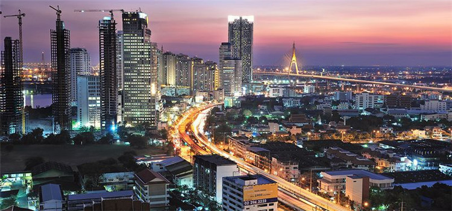

介绍
#地理位置与历史概况#
曼谷是泰国首都和最大城市，别名“天使之城”，中南半岛最大城市，东南亚第二大城市，为泰国政治、经济、贸易、交通、文化、科技、教育、宗教与各方面中心。曼谷位于湄南河三角洲，昭披耶河东岸，南距暹罗湾40公里，离入海口15公里，城区总面积为1568.737km²，全市总面积为7761.50km²。

图：曼谷夜景
曼谷是繁华的国际大都市，是贵金属和宝石的交易中心。经济占泰国总量的44%，曼谷港承担着泰国90%的外贸。曼谷旅游业十分发达，被评选为2013全球最受欢迎旅游城市。
曼谷是国际活动中心之一，每年有多达200~300起的各种国际会议在此举行。城内设有联合国亚太经社委员会总部、世界银行、世界卫生组织、国际劳工组织以及20多个国际机构的区域办事处。
#宗教#
曼谷被誉为“佛教之都”，是“世界佛教联谊会”总部及亚洲理工学院所在地。曼谷约92%人口信奉佛教，6%信奉伊斯兰教，1%信奉基督教，犹太教徒约300人，0.6%信奉印度教。曼谷约有400座佛教寺，55座清真寺，10座个教堂，2间犹太会堂。
曼谷佛教历史悠久，东方色彩浓厚，佛寺庙宇林立，建筑精致美观。泰国国宝玉佛，以金碧辉煌的大王宫、馏金溢彩的玉佛寺、庄严肃穆的卧佛寺、充满神奇传说的金佛寺、雄伟壮观的郑王庙最为著名。
曼谷是世界上佛寺最多的地方，有大小400多个佛教寺院。漫步城 中，映入眼帘的是巍峨的佛塔，红顶的寺院，红、绿、黄相间的泰式鱼脊形屋顶的庙宇，充满了神秘的东方色彩。
每天早晨，全城香烟袅袅，钟声悠悠，磬声清脆动听，诵经之声不绝于耳。寺庙里的和尚、尼姑在街上慢慢行走，逐家化缘，成为曼谷街头的特有景观。曼谷众多的寺院中，玉佛寺、卧佛寺、金佛寺最为著名，被称为泰国三大国宝。

图：曼谷寺庙
#最佳出游日期#
曼谷属热带季风气候，凉季在11月至次年2月。此时曼谷气候舒适宜人，月均温度17℃-24℃左右，各种花卉绚丽多姿，景色最美，最适合旅游。喜欢人文的旅行者可以选择重大节日时游览曼谷。
曼谷在每年的12月，举行盛大的行军大典和泰国国王寿辰纪念活动。旅行者可以亲临其境参与泰国的典礼和纪念活动。
4月13日-15日的“泰国新年”宋干节也值得旅行者体验，宋干节给炎热的高温带来凉意，用水的洗礼，给人终生难忘的欢乐回忆。
#特色之处#
曼谷是一座集古朴与现代，尊贵与市井，放纵与戒律于一身的城。
在这里你可以分明的感受到时空的交错与碰撞：你可以游览国家历史、艺术、文化的精华-大皇宫，也可以感受暹罗广场的喧闹繁华与人潮拥挤。你可以享受五星酒店带来的奢华服务，也可以品味路边摊的地道美味；你可以纵情于娜娜广场里夜店的灯红酒绿，也可以在玛哈泰寺的禅修课程中寻求心灵的精华。
曼谷的五光十色似乎可以时刻点燃来过的人对它的眷恋与向往，同样的场景反复播映却总有人为它趋之若鹜，这也许就是它的魅力所在。
图：曼谷寺院
时差
泰国比中国北京时间慢一个小时，也就是说你在中国22点，是泰国的21点。
机票上显示时间问题：所有的机票和订票网站，上面写的时间，都是飞机起飞地点和落地地点的当地时间。
比如说你从中国到泰国的机票，写着飞行时间13：00——15：00，这个13点就是中国北京时间，15点就是泰国曼谷时间。反过来举个例子，泰国回中国的飞机，如果写着时间18：30——22：30，前面这个18点半就是泰国时间，22点半就是中国时间。如果是泰国境内的飞机，那自然就都是泰国的时间了。
公共假期及节庆
#公众假期#
| 假日名称 | 放假日 |
| 新年 | 1月1日-1月3日 |
| 万佛节 | 2月 |
| 节基王朝开国纪念日 | 4月6日 |
| 宋干节（又名泼水节，泰国传统新年） | 4月13~15日 |
| 国际劳动节 | 5月1日 |
| 泰王登基纪念日 | 5月5日 |
| 春耕节 | 5月 |
| 佛诞日（也称卫塞节） | 5月 |
| 佛教三宝节 | 7月 |
| 守夏节（有蜡烛节活动） | 7月 |
| 泰国王后华诞（泰国母亲节） | 8月12日 |
| 五世王升遐纪念日 | 10月23日 |
| 万寿节（泰国父亲节） | 12月5日 |
| 行宪纪念日 | 12月10日 |
#万佛节（Makha Bucha）#
时间：每年泰历三月十五日举行或闰年泰历四月十五日
泰国的传统佛教节日，在每年泰历三月十五日举行。如逢闺年，改为泰历四月十五日。
万佛节在泰文中称为“乍笃隆迦讪尼巴”节，相传佛教创始人释迦牟尼，于泰历三月十五日在摩揭陀国王舍城竹林园大殿，向自动前来集会的1250名罗汉首次宣传教义，故称其为四方具备的集会。笃信小乘佛教的泰国佛教徒视该次集会为佛教创建之日，进行隆重纪念。
泰国的佛教徒早在阿育陀耶王朝时期就开始纪念万佛节，至曼谷王朝五世王时，官方开始举行庆祝仪式，并于1913年将这一天定为节假日并成为泰国人民传统的佛教节。政府也举行庆祝万佛节仪式，国王亲自参加。
万佛节的早晨，泰国男女老少带著鲜花、香烛和施舍物品前往附近寺院，进行施斋、焚香、拜佛活动。在万佛节，有些善男信女还持受五戒或八戒以表示对佛教的虔诚。
当天晚上，泰国最大佛寺之一，位于曼谷市北二十公里处的法身寺内万灯供佛，举行“平安灯法会”，点点灯火辉映夜空，场面震撼。
图：万佛节
#宋干节（Songkran）#
泰国泼水节又称“宋干节”，在每年的4月13日，历时三天，是泰国的重要节日。泰国泼水节代表着清除所有的邪恶、不幸和罪恶，并怀着一切美好和纯净开始新的一年。同时泰国泼水节也带动了泰国旅游业的蓬勃发展。
泼水节的早晨，按照传统，人们手拿鲜花和食品来到佛寺听经，僧侣们用树枝蘸法水洒向人们以示祝福。然后，人们在寺庙院内堆起沙塔，插上彩旗和鲜花，庆祝五谷丰登。接着人们走上街头，提着各种盛水用的器皿，互相泼水嬉戏，以此辞旧迎新。
年青人也用泼水来相互表达爱慕之心。据说，被泼水最多的人是人缘最好的，所以不被淋成个落汤鸡，人们是不肯回家的。
曼谷有着全泰风味最足的泼水节，13-15日三天玩足，司机都会停下休息参与，所以那几天也很难打到车。曼谷的暹罗广场、Silom路、考山路、Central World等市中心和大型商场一般都有超大规模的庆祝活动。
图：宋干节
#佛诞节（Visakha Bucha）#
时间：泰历六月十五
佛诞节，又称卫塞节，发生在泰历六月十五日，是佛祖释加牟尼诞生、悟道和涅槃的日期，是非常重要的佛教节日。相传佛陀在这一天诞生，顿悟和涅槃。人们在泰国寺庙前点蜡烛游行。
曼谷地区当天一般会举办行善布施法会，向各寺庙高僧及僧侣行善布施，以祈求幸福吉祥。
图：佛诞节
#农耕节（Royal Ploughing Ceremony）#
时间：每年5月某吉日，由国王选定
泰国农耕节是 泰国传统节日之一。每年五月是泰国一年一度的农耕节。泰民族自古以来为农之国，至今农业人口仍占到泰国人口的大约八成。所以全国视这一天为盛大的节日，国王和王室人员，政府领导人都会出席在曼谷王家田举行的农耕节大典仪式上，并宣布这一天是国家假日，以示隆重。
图：农耕节
#三宝节（Asahna Bucha）#
时间：泰历八月十五
泰历八月十五日，即泰国守夏节前一日，标志着佛教斋期的开始。斋期是每年三个月的雨季历时三个月（泰历八月十六日至十一月十五日），僧侣均驻守在寺庙中不外出。这一天全国佛教徒、各佛寺届时都做仪式，如守戒、听经、诵经、讲道、巡烛等。
曼谷寺庙会举行三宝佛节法会，侣手持鲜花和点燃的蜡烛，在寺院举行隆重的巡烛仪式，将三宝佛节活动推向高潮。
图：三宝节
#守夏节（Khao Phansaa）#
时间：泰历八月十六
泰历八月十六日，标志着佛教斋期开始，历时三个月（泰历八月十六日至十一月十五日），守夏节结束之日称“解夏节”。在此期间，僧侣均应驻守在寺中，尽量避免外出。
在曼谷金山寺举行施斋时，佛像从金山寺被搬到山脚进行施斋。此外，在解夏节时，人们还要进行奉施僧衣、守夏僧衣及施放黄布等布施活动。
图：守夏节
#水灯节（Loi Krathong）#
时间：泰历十二月十五
泰历十二月十五日，是泰国最美的节日。人们通过在河边漂放水灯，寄托对滋润万物的水精灵的感谢之情，同时也希望所有的罪恶和污秽能够顺水漂走。
在曼谷是有水塘的公园都有放水灯的，在轻轨的E3 PHROM PHONG站，皇后小公园的人比较多，每年都去那里，活动每年都不一样。
图：水灯节
#万寿节（HM The King’s Birthday）#
即“泰国国王华诞纪念日”。当今泰国国王拉玛九世1927 年12月5 日诞生于美国，泰国政府将每年12 月5 日定为泰国的“父亲节”。这一天，皇家田广场会有慈善组织搭起大篷为公众免费发放食物，甚至还有理发服务。各大景点也能享受半价甚至免费的特别待遇。晚上，皇家田广场还会有盛大的歌舞表演为国王庆生。
作为首都的曼谷都会举行盛大的行军大典和各种纪念泰国国王寿辰的活动，身穿鲜艳军装的泰国皇家部队和大街上着意衣装的百姓使得曼谷更加热闹，繁华。